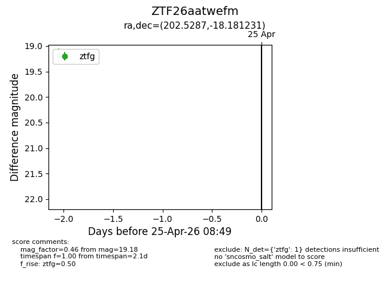
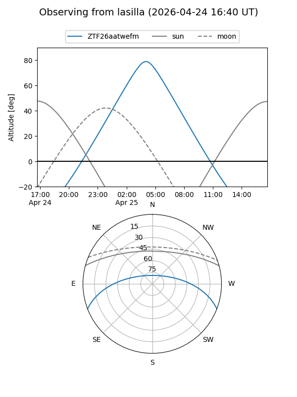
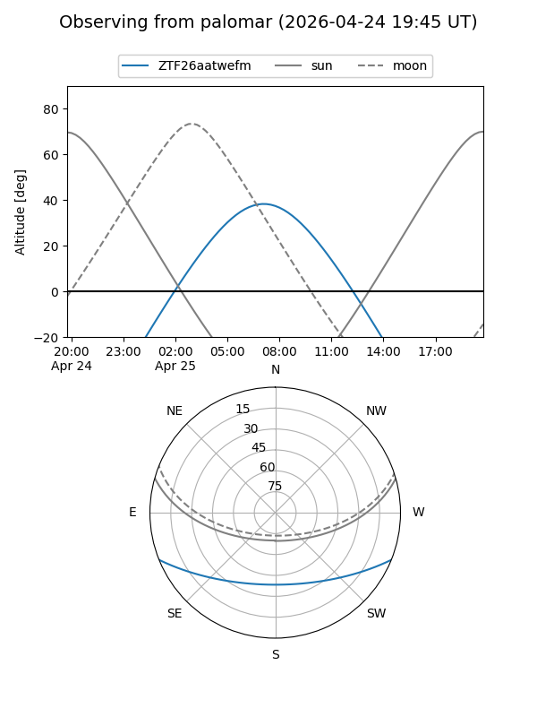

ZTF26aatwefm
Target ZTF26aatwefm at 2026-04-25 08:50
Aliases and brokers:
FINK: link
Lasair: link
ALeRCE: link
alt names
ZTF26aatwefm (ztf,fink_ztf)
Coordinates:
equatorial (ra, dec) = 202.5287,-18.18123
equatorial (HMS+DMS) = 13:30:06.89,-18:10:52.43
galactic (l, b) = (315.6899,+43.73032)
Flags:
Photometry:
last ztfg=19.18
1 ztfg detections
Lightcurve

Visibility


Additional plots